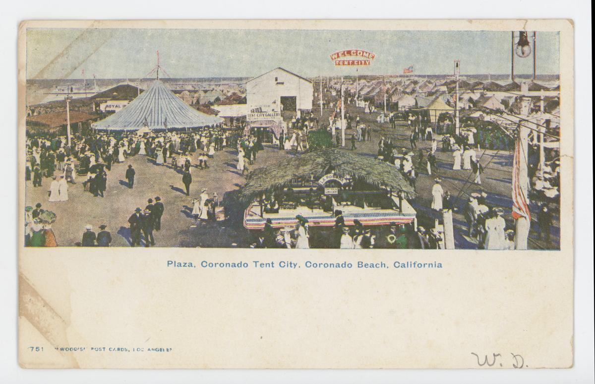
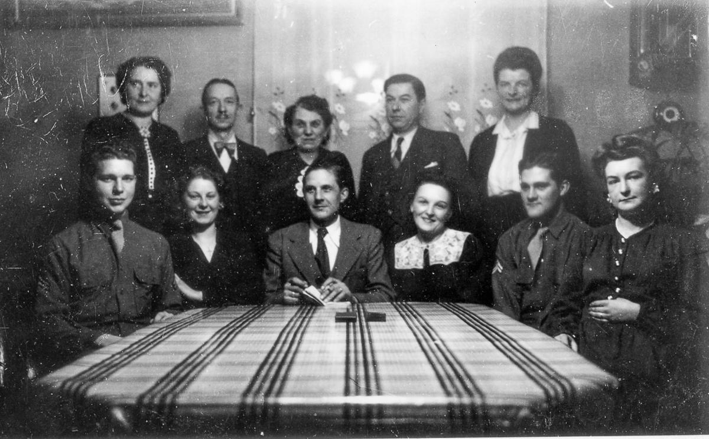

The Hartley Family Archive
The Hartley Family
A record of the Hartley family and the lines that married into it — Bradford, Cole, Reed, Frost, and Webb — drawn from census and vital records, newspapers, and the family's own papers and photographs.

Start with the family tree below, browse the people by surname, or read through the sources the record is built on — every fact on a person's page links back to the source that supports it.
Family
Thomas Edward Hartley's family, tracing back through the generations →
Recent discoveries
People
B
Family names: Bradford (1)
C
Family names: Cole (1)
H
Family names: Hartley (1)
L
Family names: Layng (1)
Places
Sources
1850s
1870s
1880s
1890s
- Marriage certificate - Calvin Hartley & Harriet Webb, 1898
- Studio portrait of Thomas Edward Hartley, circa 1895